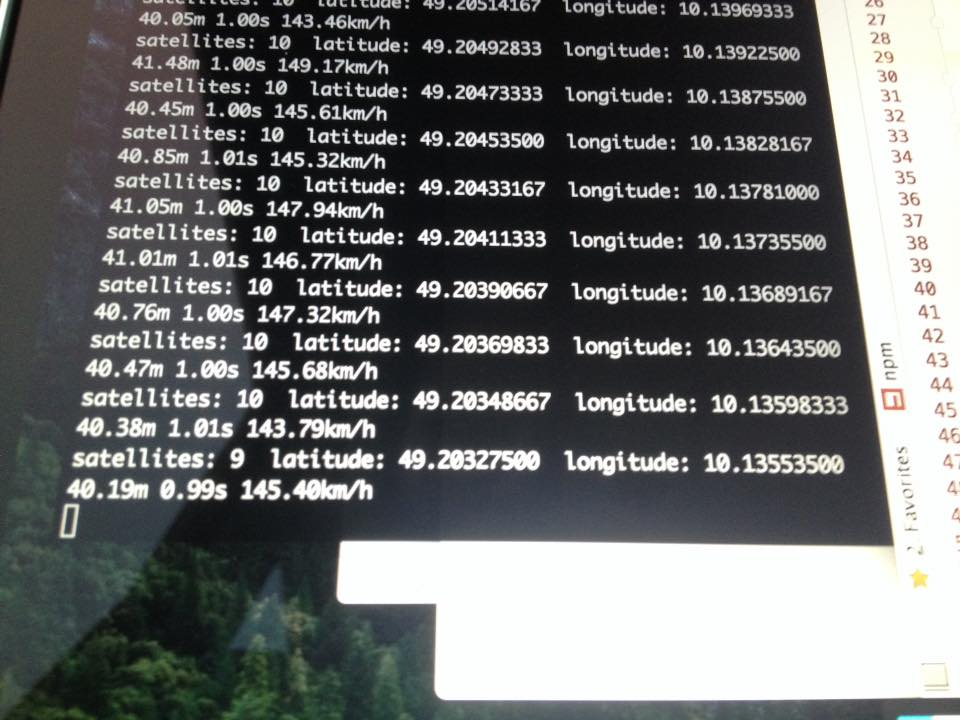

<!--
{
"title": "GPS tracking with nodejs",
"date": "2015-12-18",
"tags": "gps nodejs project prototype"
}
-->
<p>On a long drive through germany i wrote a script which tracks your position and speed.</p>
__MORE__
<p></p>